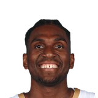

Connor Letourneau:Kerr:
“I think everyone knows that Looney is kind of a personal favorite of mine.”


Every quote from Steve Kerr about Kevon Looney in the archive, newest first. Each one links to its original source.
Connor Letourneau:Kerr:
“I think everyone knows that Looney is kind of a personal favorite of mine.”
Madeline Kenney:Steve Kerr on Kevon Looney:
“I think Loon is one of the best centers in the league, I really do. And people don't recognzie it becasue he's not dunking and shooting 3s and all that stuff. This guy is a flat-out winner and he's a machine. We wouldn't be here without him.”
Mark Medina:Steve Kerr on handling minutes for Andrew Bogut and Kevon Looney:
“Bogut and Kevon have been fantastic. Both are playing at a very high level. If I didn’t play those guys, I'd be an idiot.”
Madeline Kenney:Steve Kerr on Kevon Looney:
“I think Loon is one of the best centers in the league, I really do. And people don't recognzie it becasue he's not dunking and shooting 3s and all that stuff. This guy is a flat-out winner and he's a machine. We wouldn't be here without him.”
Anthony Slater:Steve Kerr on Kevon Looney:
“I didn't play him enough in Game 3.That was my mistake.”
Connor Letourneau:Kerr:
“I think everyone knows that Looney is kind of a personal favorite of mine.”
Steve Kerr on Kevon Looney:
“Three straight days of scrimmaging, a lot of work and he's feeling excellent. That's a huge sign for us of a huge guy we can count in a big situation being healthy, unlike last year.”
Connor Letourneau:Steve Kerr on a center rotation of Wiseman, Looney and Chriss:
“We anticipate all three of them playing. As always, we'll figure out who starts as we go.”
Connor Letourneau:Steve Kerr on Kevon Looney:
“He's done more the last week. He's playing one-on-one right now on the practice floor. Rick (Celebrini) says he's coming along. I don't have a possible date for his return.”
Mark Medina:Steve Kerr on handling minutes for Andrew Bogut and Kevon Looney:
“Bogut and Kevon have been fantastic. Both are playing at a very high level. If I didn’t play those guys, I'd be an idiot.”
Connor Letourneau:Kerr on Looney:
“I think he’s gonna have a good 10 or 12 year run in the NBA.”
Connor Letourneau:Kerr on Kevon Looney:
“He was probably the best player in practice today in terms of his overall effort and how he played. He was great.”